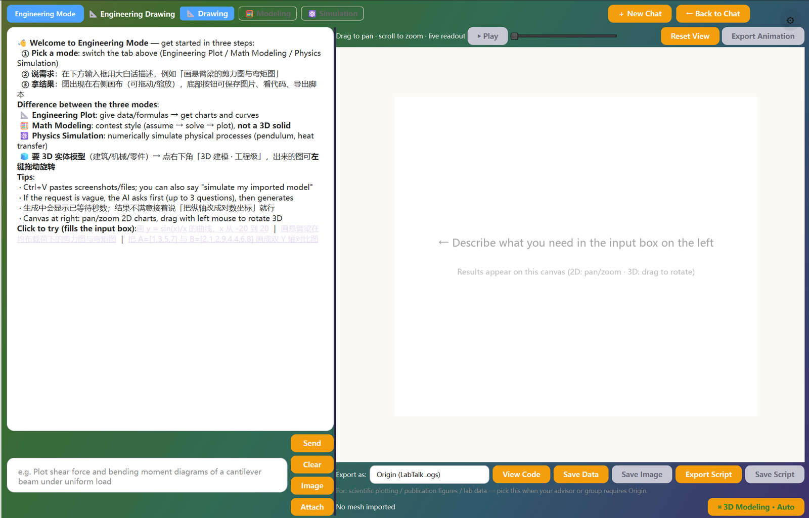

它能做什么
完整建模流程
先给不超过 5 行的建模假设与思路，再给可运行的求解代码，最后用图展示结果并简短解读——就是竞赛论文的骨架。
方程 / 拟合 / 优化全覆盖
微分方程（solve_ivp）、最小二乘拟合、线性规划、蒙特卡洛模拟等常用建模方法都支持。
结果立刻可视化
求解完自动绘图：收敛曲线、相图、参数敏感性……直观检查模型行为。
一键导出 MATLAB 脚本
方案定稿后导出 .m 脚本，方便在 MATLAB 里复现，或交给需要 MATLAB 的课程与队友。
参考历史不跑偏
多轮对话保留上下文，改约束、换目标函数，接着说就行。
参数单位写清楚
生成的代码里参数带物理量纲注释，避免「0.5 到底是啥」的尴尬。
怎么用
- 1侧栏点「🧮 建模手」。
- 2描述问题，例如「用逻辑斯蒂模型预测种群增长并做参数拟合」。
- 3阅读思路说明，等右侧出结果图；不满意就继续追问修改。
- 4导出脚本 → MATLAB，保存 .m 文件复现。
技术亮点
- 本地执行环境含 numpy / scipy / matplotlib 全家桶，数值能力完整。
- solve_ivp、least_squares 等直接可用，无需自实现求解器。
- 多模型降级链复用主程序同一套调度，限频自动切换。
- 代码执行异常全捕获回传，模型写错不会崩掉 App。
看一眼
